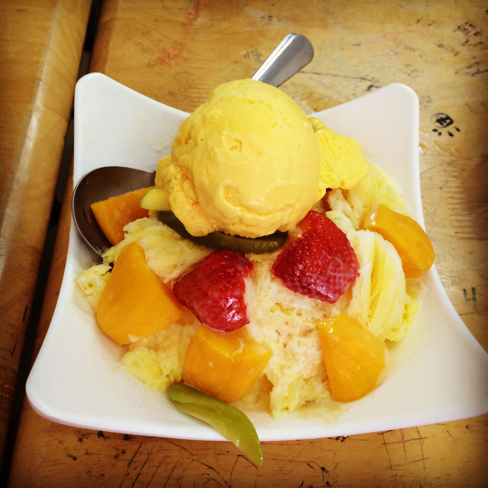
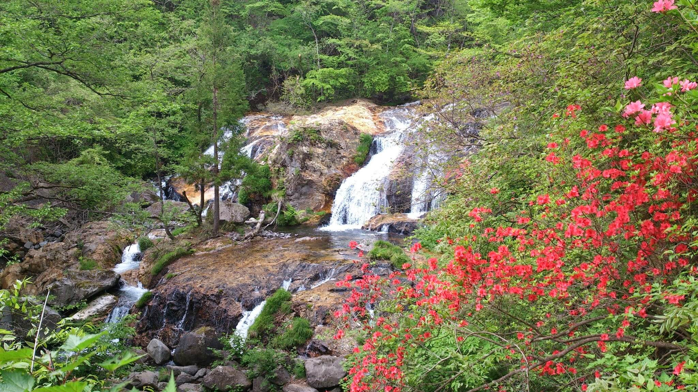
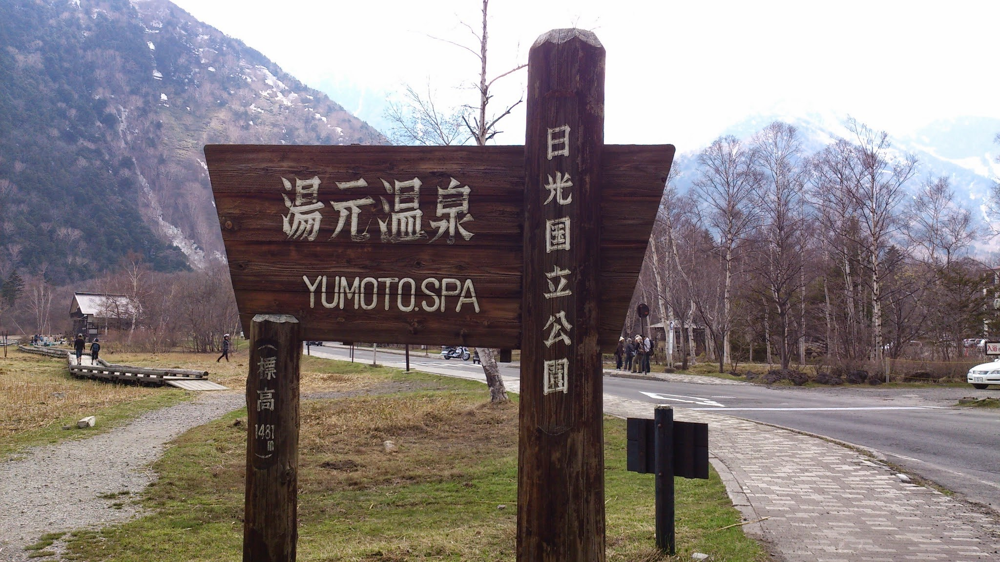
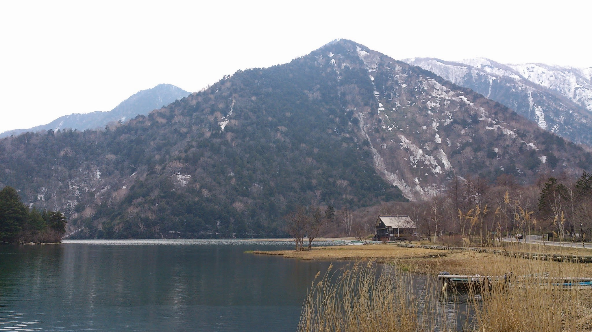
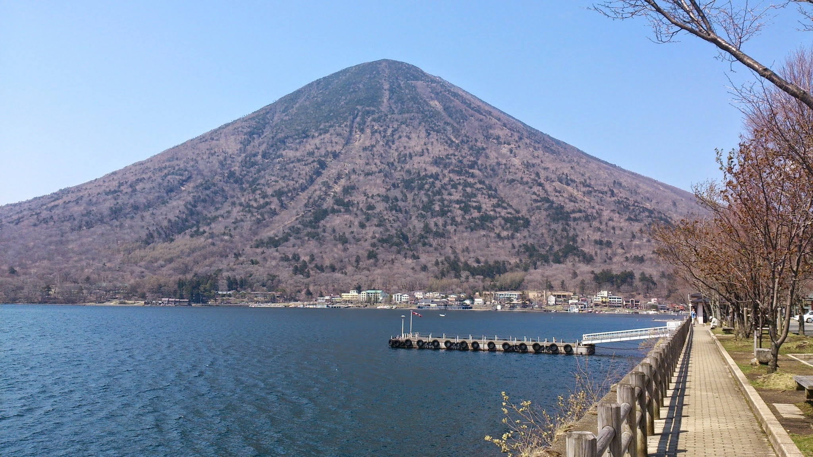
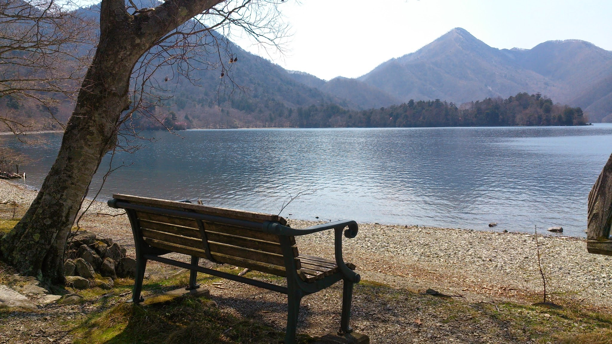
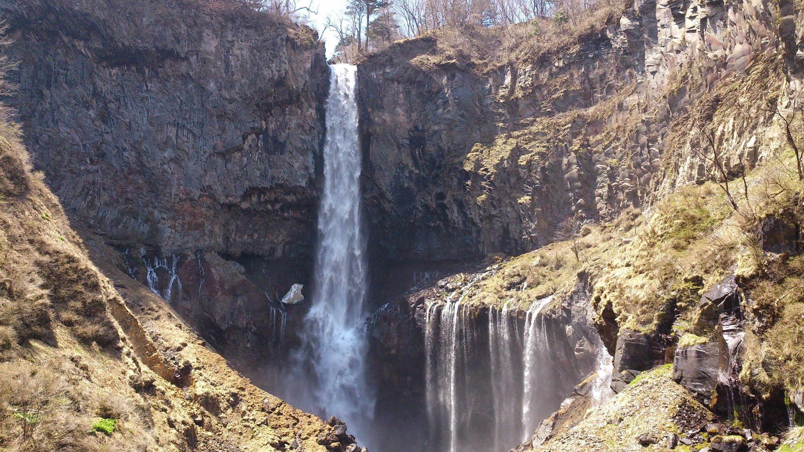

關於我 - Lori
歷經一年日本打工度假，現任測試軟體工程師
| 日本生活 | 1 年 |
|---|---|
| 居住城市 | 名古屋、日光 |
| 打工經驗 | 物流分配作業員、溫泉旅館staff |
| 日語程度 | 出發前僅上過至進階一大家的日本語程度，從不會聽說到簡單對話，最後在日本有考到N2 |
| 打工度假心得 | 台灣學生或許需要像歐美國家那樣有個gap year，而且越早出發越好，能幫助自己獨立生活也有助於開拓眼界 |
旅行足跡

日光
日光
霧降高原玉簾瀑布

日光
日光
湯元溫泉

日光
日光
湯之湖

日光
日光
中禪寺男體山

日光
日光
中禪寺湖

日光
日光
華嚴瀑布
Q ＆ A
- Q：辦理日本打工度假簽證需要找代辦嗎？
- A：個人在出發前也曾經找過代辦，但還沒出國只是聽文件撰寫的講座就已經花四千了...
後來自己去找資料寫文件到申請簽證的過程，發現其實只要有心就能做好，不是很困難的事情
找代辦能幫助到你的應該就是一到那邊立刻有工作吧
- A：個人在出發前也曾經找過代辦，但還沒出國只是聽文件撰寫的講座就已經花四千了...
- Q：我需要先考過日本語檢定考嗎？
- A：請先研究好日本在台交流協會網站說明
內文並未提到一定要附有檢定合格證明，基本上只要你有辦法在日本找到工作就可以
(當初出去時根本沒有報名過日語檢定考...)
- A：請先研究好日本在台交流協會網站說明
- Q：我需要帶多少錢去日本呢？
- A：個人認為除非你能保證在第一個月就能找到工作的話
否則建議還是帶個三個月的生活費比較保險，就如同在台灣一樣
一個月生活費含房租參考：9-11萬日幣 (這裡指的是自己租房的情形)
- A：個人認為除非你能保證在第一個月就能找到工作的話